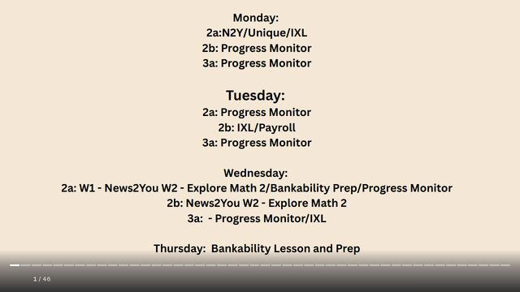

Grace Dittman
Block 2 Math
Block 3 Math
ESS
Lesson Plans
Résumé
Photos
Search
Home
›
Block 2 Math
›
Week 11
Week 11
← Week 10
Week 12 →
Activities
· 1 file
Fall Bingo (combined document)
Nov Literacy Groups.docx
Lesson Plans
· 5 files
B2_11-9LessonPlan
B2_11-9LessonPlan.docx
B2_11-10LessonPlan
B2_11-10LessonPlan.docx
B2_11-11LessonPlan
B2_11-11LessonPlan.docx
B2_11-12LessonPlan
B2_11-12LessonPlan.docx
BankabilityDayLessonPlan
BankabilityDayLessonPlan.pdf
Slides
· 1 file

B2 Week 11 Slides
B2 Week 11 Slides.docx
← Week 10
Week 12 →